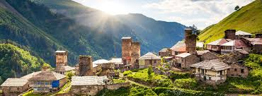

Georgia is a transcontinental country in Eastern Europe and West Asia. It is part of the Caucasus region, bounded by the Black Sea to the west, Russia to the north and northeast, Turkey to the southwest, Armenia to the south, and Azerbaijan to the southeast. Georgia covers an area of 69,700 square kilometres (26,900 sq mi). It has a population of 3.7 million,of which over a third live in the capital and largest city, Tbilisi. Georgians, who are native to the region, constitute a majority of the country's population and are its titular nation.Georgia has been inhabited since prehistory, hosting the world's earliest known sites of winemaking, gold mining, and textiles. The classical era saw the emergence of several kingdoms, such as Colchis and Iberia, that formed the nucleus of the modern Georgian state. In the early fourth century, Georgians officially adopted Christianity, which contributed to the unification into the Kingdom of Georgia. Georgia reached its Golden Age during the High Middle Ages under the reigns of King David IV and Queen Tamar. Beginning in the 15th century, the kingdom declined and disintegrated under pressure from various regional powers, including the Mongols, the Ottoman Empire, and Persia, before being gradually annexed into the Russian Empire starting in 1801.
The nation of Georgia was first unified as a kingdom under the Bagrationi dynasty by the King Bagrat III of Georgia in the early 11th century, arising from several successor states of the ancient kingdoms of Colchis and Iberia. The Kingdom of Georgia flourished during the 11th and 12th centuries under rulers such as King David IV the Builder and Queen Tamar the Great. The kingdom fell to the Mongol invasion by 1243, and after a restoration under George V the Brilliant it fell again to the Timurid Empire in 1403. By 1490, Georgia was fragmented into several petty kingdoms and principalities, which throughout the Early Modern period struggled to maintain their autonomy against Ottoman and Iranian domination until Georgia was finally annexed by the Russian Empire in the 19th century. After a brief period of independence as Democratic Republic of Georgia, the country soon ended up being a Soviet Republic until the dissolution of the Soviet Union. The current republic of Georgia has been independent since 1991.

Evidence for the earliest occupation of the territory of present-day Georgia goes back to c. 1.8 million years ago, as evident from the excavations of Dmanisi in the southeastern part of the country. This is the oldest evidence of humans anywhere in the world outside Africa. Later prehistoric remains (Acheulian, Mousterian, and the Upper Palaeolithic) are known from numerous cave and open-air sites in Georgia. The earliest agricultural Neolithic occupation dates between 6000 and 5000 BC. known as the Shulaveri-Shomu culture, where people used local obsidian for tools, raised animals such as cattle and pigs, and grew crops, including grapes. Numerous excavations in tell settlements of the Shulaveri-Shomu type have been conducted since the 1960s.Early metallurgy started in Georgia during the 6th millennium BC, associated with the Shulaveri-Shomu culture. From the beginning of the 4th millennium, metals became used to a larger extent in East Georgia and the whole Transcaucasian region.
Diauehi, a tribal union of early-Georgians, first appear in written history in the 12th century BC.Archaeological finds and references in ancient sources reveal elements of early political and state formations characterized by advanced metallurgy and goldsmith techniques that date back to the 7th century BC and beyond.[15] Between 2100 and 750 BC, the area survived the invasions by the Hittites, Urartians, Medes, Proto-Persians and Cimmerians. During the same period, the ethnic unity of Proto-Kartvelians broke up into several branches, among them Svans, Zans/Chans, and East-Kartvelians. That finally led to the formation of modern Kartvelian languages: Georgian (originating from East Kartvelian vernaculars), Svan, Megrelian and Laz (the latter two originating from Zan dialects). By that time Svans were dominant in modern Svaneti and Abkhazia, Zans inhabited the modern Georgian province of Samegrelo, while East-Kartvelians formed the majority in modern eastern Georgia. As a result of cultural and geographic delimitation, two core areas of future Georgian culture and statehood formed in western and eastern Georgia by the end of the 8th century BC. The first two Georgian states emerged in the west known as the Kingdom of Colchis and in the east the Kingdom of Iberia.
A second Georgian tribal union emerged on the Black Sea coast in the 13th century BC under the Kingdom of Colchis in western Georgia. The kingdom of Colchis, which existed from the 6th to the 1st centuries BC is regarded as the first early Georgian state formation and the term Colchians was used as the collective term for early Georgian-Kartvelian tribes such as Mingrelians, Lazs, and Chans who populated the eastern coast of the Black Sea.
The ancient Greeks knew of Colchis, and it featured in the Greek legend of Jason and the Argonauts, who travelled there in search of the Golden Fleece. Starting around 2000 BC, northwestern Colchis was inhabited by the Svan and Zan peoples of the Kartvelian tribes. Another important ethnic element of ancient Colchis were Greeks who between 1000 and 550 BC established many trading colonies in the coastal area, among them Naessus, Pityus, Dioscurias (modern Sukhumi), Guenos, Phasis (modern Poti), Apsaros, and Rhizos (modern Rize in Turkey). In the eastern part of Georgia, there was a struggle for the leadership among the various Georgian confederations during the 6th-4th centuries BC, which was finally won by the Kartlian tribes from the region of Mtskheta. According to the Georgian tradition, the Kingdom of Kartli (known as Iberia in the Greek-Roman literature) was founded around 300 BC by Parnavaz I, the first ruler of the Parnavazid dynasty.


| Period of Reign | |
| Alexander I | 1412-1442 |
| Bagrat III | 975-978 |
| Constantine I | 1407-1411 |
| David VIII | 1292-1302 |
| Demetrius I | 1125-1156 |
| Queen Tamar | 1184-1213 |
| Queen Rusudan | 1223-1245 |